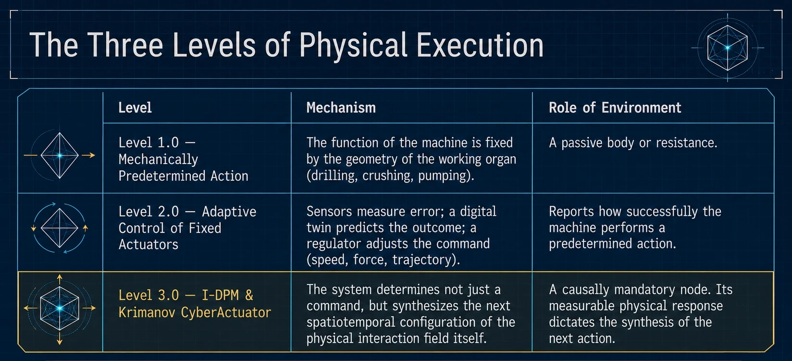
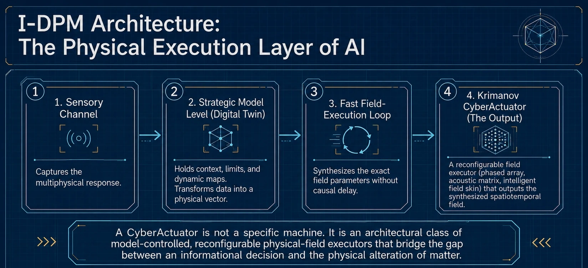

Гибкий интеллект
Система пересматривает интерпретацию, цель и решение по мере изменения среды.
Фундаментальный принцип физического исполнения
Интеллектуальный синтез физического взаимодействия с материей.
Принцип Криманова устанавливает: измеримые последствия предыдущего физического взаимодействия системы становятся основанием для определения и синтеза следующего взаимодействия с той же причинно связанной физической областью.
Исполнительный разрыв
ИИ воспринимает среду, прогнозирует изменения и обновляет модель в реальном времени. Последний физический шаг всё ещё часто выражается командой фиксированному исполнителю: вращать, давить, открыть, переместить или остановить. Принцип Криманова продолжает интеллект до самой конфигурации физического взаимодействия.
Система пересматривает интерпретацию, цель и решение по мере изменения среды.
Исполнитель сохраняет функцию, заданную конструкцией, а управление меняет параметры вокруг этой функции.
Текущий физический отклик становится необходимым входом для синтеза следующей пространственно-временной формы взаимодействия.
Суперкомпьютер, запертый внутри кувалды.Прямой образ исполнительного разрыва: сложный интеллект соединён с грубым и структурно предопределённым физическим выходом.
Три уровня физического исполнения
Трёхуровневая рамка отделяет адаптацию параметров от изменения причинной организации физического исполнения.
Функция задаётся геометрией и конструкцией рабочего органа.
Датчики и модели меняют усилие, скорость, момент или траекторию при сохранении заранее заданного способа действия.
Система синтезирует следующее пространственно-временное физическое взаимодействие по текущему измеримому отклику. I-DPM реализует этот уровень для материи и материальных сред.

Архитектурная новизна
Датчики, цифровые двойники, источники полей, силовая электроника и алгоритмы управления могут существовать как отдельные компоненты. Новая функциональная организация возникает, когда регистрация отклика, операционное моделирование, синтез взаимодействия, физическое исполнение и верификация образуют один непрерывный причинно замкнутый цикл.
Решающий переход создаёт причинная интеграция известных возможностей. Отклик среды участвует в определении следующего физического взаимодействия и выходит за пределы вспомогательной обратной связи о заранее выбранном действии.
Причинный инвариант, связывающий предыдущее взаимодействие, отклик, модель и следующее взаимодействие.
Инженерно-технологический стандарт интеллектуально-определяемой обработки материалов.
Реконфигурируемое физико-полевое исполнение, преобразующее модельно интерпретированный отклик во взаимодействие.
Целевой сбор ресурсов и взаимодействие с материалами непосредственно в операционной среде.
Самостоятельное исследовательское направление для динамически изменяющихся нервных сред.
Причинное ядро
Зарегистрированный физический или многофизический ответ причинно связанной области взаимодействия.
Операционное представление актуального физического состояния: динамическая карта, тензор состояний, вектор признаков или цифровой двойник.
Интеллектуально определяемые топология, функциональное распределение, поле, градиент, фаза, частота, амплитуда, полярность, длительность и распределение энергии следующего взаимодействия.
Изменённая среда формирует следующий измеримый ответ, подтверждает результат и запускает последующий цикл.
ARIADNE Loop / Петля Ариадны
Система зондирует, регистрирует, моделирует, синтезирует, взаимодействует и проверяет результат применительно к той же причинно связанной физической области, пока её состояние сохраняет актуальность. Среда является обязательным причинным узлом: последствия предыдущего взаимодействия возвращаются через неё как информация для следующего взаимодействия.
Операционная модель становится машинно-действующим звеном. Она преобразует измеримый отклик в представление, из которого синтезируется следующая физическая конфигурация.
Инженерная архитектура
Defined / определяемая означает, что система определяет среду, цель, отклик, текущее состояние, способ взаимодействия и следующий шаг. Processing / обработка означает полный цикл разведки, обнаружения, идентификации, моделирования, физико-полевого действия, селективного сбора или преобразования и верификации.

Киберактуатор Криманова
Непосредственно синтезируемой сущностью может быть физическое поле, градиент, распределённый силовой ландшафт, акустическое воздействие, плазменное состояние, распределение энергии или иной пространственно-временно организованный физический процесс.
В одной электромагнитной ветви по меньшей мере та же реконфигурируемая полевая структура участвует в диагностическом взаимодействии и селективном физическом действии внутри одного замкнутого цикла. Связанные измерительные цепи регистрируют отклик и обеспечивают верификацию и реконфигурацию. Аппаратное исполнение меняется по задаче; причинная архитектура сохраняется.
Временная причинность
В задачах, где существенны переходные физические состояния, следующий причинно связанный цикл завершается до того, как предыдущий отклик перестаёт описывать состояние, на которое направлено воздействие.
Измерение, модель и взаимодействие остаются внутри физически актуального временного окна. Это условие выражает причинную непрерывность, а не только скорость процессора.
Операционная самодостаточность, энергия и рой
Операционная самодостаточность определяется локально замкнутым циклом определения, взаимодействия, сбора или преобразования и верификации. Полная изоляция не требуется: оператор, кабель, базовая станция или внешний энергетический канал поддерживают миссию, сохраняя внутренний причинный цикл системы.
Автономный, супервизорный, дистанционный, кабельно связанный, базово-станционный и роевой режимы сохраняют один цикл исполнения по отклику среды.
Малозатратные диагностические поля уточняют цель и модель. Силовое взаимодействие включается селективно и направляется на целевой компонент и его траекторию вместо массового перемещения балласта.
Раскрытая архитектура может включать магнитоиндуктивную связь, резонансный энергообмен, рекуперацию обратной ЭДС и термоэлектрической энергии с последующей инженерной реализацией и проверкой.
Модули обмениваются откликами, моделями, задачами, связью, полями и энергетическим балансом. Рой масштабирует производительность через координацию, сохраняя локальные циклы.
Промышленная и ресурсная парадигма
Ресурс определяется по отклику среды и собирается на месте как целевой компонент. Разведка, идентификация, взаимодействие, селективный сбор, первичное обогащение и верификация становятся одним операционным циклом внутри ресурсной среды.
Разведка, добыча, транспортировка, переработка и контроль разнесены во времени и инфраструктуре. Большие объёмы вовлекаются до выделения целевой доли.
Пропускная способность по валовой массе.
Система идентифицирует цель, синтезирует требуемое взаимодействие, перемещает, отделяет, защищает или преобразует компонент и проверяет результат при минимальном вовлечении нецелевой среды.
η = m_target / (m_target + m_ballast)Один модуль или рой объединяет функции, ранее распределённые между геологоразведкой, добычной машиной, транспортом, первичной переработкой, лабораторным контролем и картографированием. Внешняя инфраструктура поддерживает миссию; определяющий цикл остаётся локальным и выполняется по отклику среды.
Специализированная проводящая ветвь
Intellectually Defined Processing of Conductive Materials — специализированная ветвь I-DPM для проводящих и поляризуемых целей, включая самородные металлы, стратегические материалы, техногенные металлические компоненты и проводящие фракции реголита или астероидной массы.
Диагностическое взаимодействие регистрирует импеданс, фазу, спектральный отклик, затухание, пространственное распределение и связанные признаки. Синтезированный силовой режим перемещает, концентрирует, удерживает или отделяет цель бегущим, импульсным, градиентным или комбинированным электромагнитным полем.
Среды применения
Инвариантом остаётся цикл по отклику. Источник поля, исполнитель, носитель, энергетический канал и ограничения безопасности изменяются вместе со средой.
Зондирование рабочей зоны, целевой сбор, возврат нецелевой массы и повторная проверка без подъёма основной массы на поверхность.
Динамическое картографирование, адаптивный маршрут и переход от диагностического взаимодействия к целевому исполнению в реальном времени.
Локальное определение и обработка реголита, астероидной массы, воды, кислорода, топливного сырья, строительных материалов и техногенных орбитальных объектов.
Хвосты, шламы, шлаки, промышленные потоки и электронные отходы становятся средами селективного возврата ресурсов, неразрушающего контроля и ремедиации.
Динамический гомеостаз, селективное отделение или обработка в биожидкостях, биоплёнках и других живых и биосферных средах. Нервный фронт раскрыт отдельно.
Industry 5.0
Человекоцентричная и устойчивая промышленность становится физически исполняемой, когда интеллектуальное управление определяет цель, ограничивает область воздействия, направляет энергию селективно и проверяет результат.
Человек задаёт цели, этические и экологические границы, допустимую энергию, безопасные зоны, требования проверки и правила остановки.
Система снижает нецелевую переработку, энергетическую нагрузку, отходы и хвосты, действуя на определённый компонент и его причинную область.
Рой перераспределяет задачи, сохраняет локальные модели, ограничивает отказы и продолжает работу при нарушениях связи, логистики или энергоснабжения.
Самостоятельный фронт Level 3.0 для живой материи
Отдельное исследовательское и патентное направление, применяющее Принцип Криманова и архитектуру I-DPM к живым нервным средам, где импеданс, фазовые условия, геометрия тканей и физиологическое состояние непрерывно изменяются.
В предлагаемой классификации Level 3.0 система регистрирует текущий многофизический отклик, обновляет индивидуальную операционную модель, синтезирует следующую конфигурацию поля и измеряет фактический нервный ответ.
Концепция включает распределённые сенсорно-исполнительные матрицы, ячейки которых изменяют функции регистрации, передачи и управления полем, а также динамически обновляемые пределы тепловых, электрических и других параметров взаимодействия.
Раздел описывает исследовательскую и патентную архитектуру и не является заявлением о клинической валидации или установленной медицинской эффективности.
Публичная техническая фиксация
Публичное раскрытие фиксирует ключевую терминологию и архитектурные положения. Этот сайт является кратким объяснительным центром и может развиваться при сохранении фундаментальных смыслов.